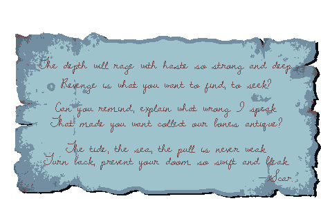
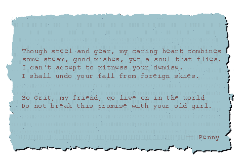
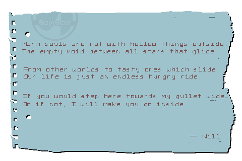
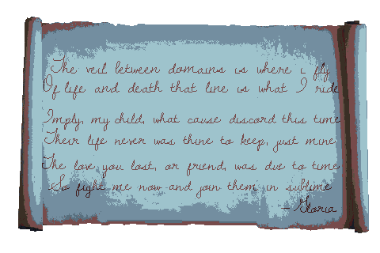
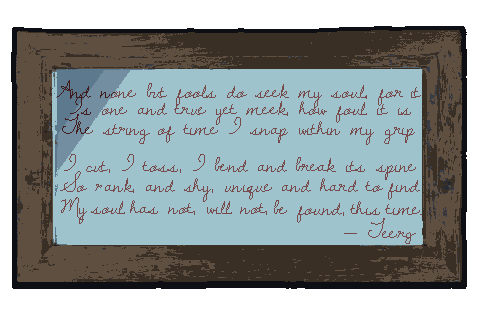
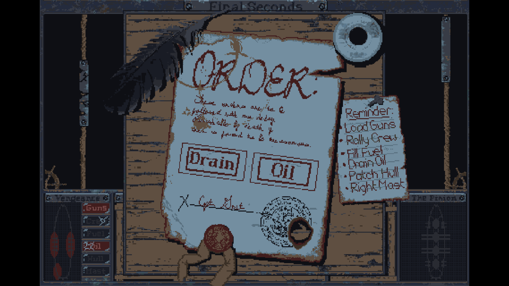
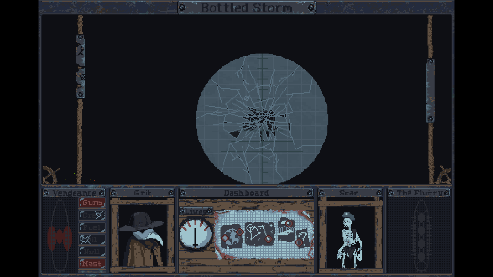
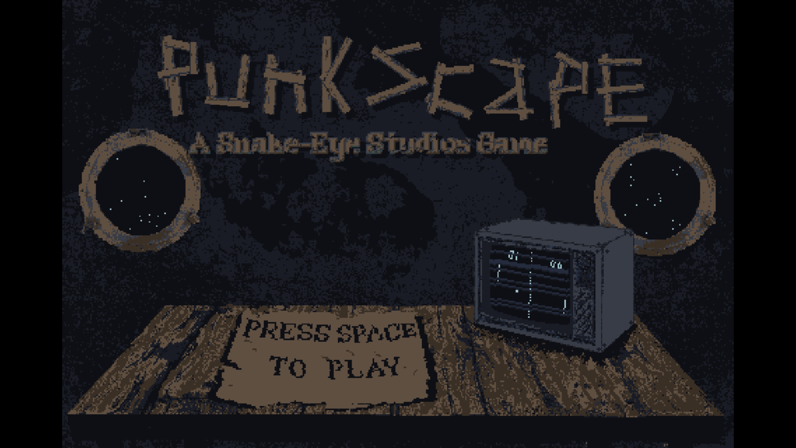

Led the gameplay design and creative direction of the project.
Wrote the 5 characters' introductions and dialogue.
Illustrated every game asset.
Programmed initial game logic and front-end structure.
Documented and managed collaborative and individual tasks for the team.
Punkscape - 2021Welcome to Punkscape, a cooperative & vindictive spin on Pong in a spacepunk, Eldritch setting.
Punscape was shipped at the beginning of 2021. My game development partner Remy and I collaborated on Punkscape for just under 3 months of quantifiable game development time. He handled the sound/music and AI, while I handled the creative direction, game design, gameplay, writing, and art. It was built using Godot with custom sound libraries built by Remy.
The writing of Punkscape featured 5 short expository letters, written to the protagonist by the enemies in the game. Written in iambic pentameter, these letters aimed to capture the unique voice and history of each enemy, introduce them to the player, and provide world-building and context in as little words as possible. Take a look at the letters in full:
    The art direction I chose for this project was a grungy, poetic, spacepunk world with airships made of wood and steel. The sprites I illustrated needed to capture this aesthetic, so I opted for a limited color palette heavy in the blues and beiges to strengthen the look of the materials used in this world.
I wanted our "repair" mechanic to reflect this as well, so its sprite featured an abundance of wood, torn paper, and an ink and quill.
Similarly, the UI and game screen needed this treatment as well, so I elected to use diegetic UI in the form of dials, buzzers, lights, and paper maps to show game information to the player.
Lastly, to welcome our players to the game world, our start screen features wood-framed portholes showing the stars of space beyond, a rough wooden table, and an old CRT monitor.
I was the principal designer on the project. We wanted to put a cooperative spin on the classic game "Pong", and came up with a "periscope" and "repair" mechanic.
The periscope added in a layer of co-op play to the classic Pong. The game space is entirely blacked out except for a small circular window. The player in control of the periscope can move this viewport around for the player controlling the paddle, allowing them to track the ball and play accurately.
The repair mechanic was added in to add a more verbal/meta collaboration dimension to the game. Once a repair is initiated (to regain health, vision, paddle speed, etc.) the repair screen picture above obscured the game space. You'll need to collaborate with your partner on what repair to initiate before submitting the repair and returning to the game.
The game does not pause during a repair, so you'll have to act quickly or run the risk of sustaining further damages. The player who was controlling the paddle is now selecting the nouns, and the person controlling the periscope is now selecting the verbs. The verbs and nouns will need to match the accepted "pairs" to carry out a successful repair, such as "Load Guns" or "Patch Hull". There are dummy words sprinkled amongst the correct words, so be careful not to "Bake Cookies" or "Drain Fuel".
During this project I found that world building is a lot of fun, and I would take any opportunity in the future to do more of it in a professional capacity. Since Punkscape was such a short game, I want more space in the future to develop a game's world and narrative, with a similar level of atmosphere that we achieved with Punkscape.